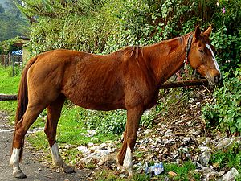

Ngựa
Ngựa (danh pháp hai phần: Equus caballus) là một loài động vật có vú trong họ Equidae, bộ Perissodactyla. Loài này được Linnaeus mô tả năm 1758.,[3] và là một trong số 8 phân loài còn sinh tồn cho tới ngày nay của họ Equidae. Ngựa đã trải qua quá trình tiến hóa từ 45 đến 55 triệu năm để từ một dạng sinh vật nhỏ với chân nhiều ngón trở thành dạng động vật lớn với chân một ngón như ngày nay.
Tùy thuộc vào giống, sự quản lý và môi trường, thức ăn, nước uống v.v ngày nay ngựa có tuổi thọ khoảng 25 đến 30 năm. Con ngựa sống thọ nhất có thể kiểm chứng là "Old Billy", một con ngựa sống trong thế kỷ 19 với tuổi thọ là 62 năm.[9] Hiện nay, Sugar Puff, con ngựa được liệt kê trong Sách Kỷ lục Guinness như là con ngựa pony già nhất còn sống trên thế giới, đã chết ngày 25 tháng 5 năm 2007 ở độ tuổi 56

Loài ngựa Mirature Horses là loài ngựa nhỏ nhất thế giới, chỉ cao từ 35 đến 47 cm. Loài ngựa này chỉ sống tập trung ở vùng núi Nam Carolina (Mỹ). tuổi thọ trung bình của một chú ngựa này từ 40 đến 50 năm, trong khi đó, ngựa bình thường có tuổi thọ từ 20 đến 30 năm.